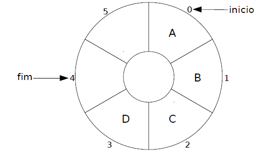

Filas como TAD em C¶
Disciplina: Estrutura de Dados
Tema: Tipo Abstrato de Dados FILA – Implementações Estática (Circular) e Dinâmica
Pré-requisitos: TADs, Listas Estáticas e Encadeadas (capítulos anteriores), Ponteiros, malloc/free
1. Conceito Formal de Fila¶
1.1 Definição Abstrata¶
"Uma Fila (Queue) é uma estrutura de dados linear onde as inserções ocorrem em uma extremidade (final/rear) e as remoções ocorrem na outra extremidade (início/front). A ordem de processamento dos elementos é estritamente sequencial."
Em notação matemática, assim como a Lista, a Fila é uma sequência finita de elementos (x₁, x₂, ..., xₙ), mas com restrições rígidas de acesso:
- Inserção: Apenas no final (
n + 1). - Remoção: Apenas no início (
1). - Acesso: Apenas ao elemento da frente (
x₁).
1.2 Política de Acesso: FIFO¶
A política que rege as filas é a FIFO (First In, First Out – Primeiro a Entrar, Primeiro a Sair).
| Característica | Fila (Queue) | Pilha (Stack) | Lista (List) |
|---|---|---|---|
| Política | FIFO | LIFO | Nenhuma (acesso livre) |
| Inserção | Final (Rear) | Topo | Qualquer posição |
| Remoção | Início (Front) | Topo | Qualquer posição |
| Acesso | Apenas o primeiro | Apenas o topo | Qualquer posição |
| Analogia | Fila de banco | Pilha de pratos | Lista de compras |
1.3 Comparação Visual: Pilha vs. Fila¶
PILHA (LIFO) FILA (FIFO)
┌─────────┐ ┌─────────┐
│ Topo │ ← Entra/Sai │ Fim │ ← Entra
│ (3) │ │ (3) │
│ (2) │ │ (2) │
│ (1) │ │ (1) │
└─────────┘ └─────────┘
↑
Sai (Início)
2. Aplicações de Filas na Computação¶
Filas são essenciais sempre que há necessidade de gerenciamento de ordem ou espera.
| Aplicação | Descrição |
|---|---|
| Escalonamento de CPU | Processos prontos para execução aguardam em uma fila para usar o processador. |
| Buffers de Impressão | Documentos enviados para impressão ficam em fila até a impressora estar livre. |
| Atendimento de Rede | Pacotes de dados aguardam em roteadores para serem transmitidos. |
| Busca em Largura (BFS) | Algoritmo de grafos que usa fila para visitar nós nível por nível. |
| Sistemas de Atendimento | Call centers, caixas de supermercado, triagem hospitalar. |
| Produtor-Consumidor | Buffer entre threads que produzem dados e threads que os processam. |
Insight: Sempre que você vê um problema envolvendo "ordem de chegada" ou "espera", provavelmente uma Fila é a estrutura adequada.
3. Interface do TAD FILA¶
Assim como nas Listas, definimos uma interface única (fila.h) que permite trocar a implementação (estática vs. dinâmica) sem alterar o código cliente.
3.1 Operações Definidas¶
| Categoria | Operação | Descrição | Retorno |
|---|---|---|---|
| Criação | criaFila() |
Cria fila vazia | Fila* ou NULL |
destroiFila(f) |
Libera memória | void |
|
| Consultas | vazia(f) |
Verifica se está vazia | 1 se vazia, 0 caso contrário |
cheia(f) |
Verifica capacidade (só estática) | 1 se cheia, 0 caso contrário |
|
tamanho(f) |
Retorna nº de elementos | int |
|
frente(f) |
Observa o primeiro elemento | Valor ou erro | |
| Manipulação | enfileira(f, x) |
Insere no final | 1 se sucesso, 0 se falha |
desenfileira(f) |
Remove do início | 1 se sucesso, 0 se falha |
3.2 Arquivo de Interface: fila.h¶
/* fila.h – Interface do TAD FILA */
#ifndef FILA_H
#define FILA_H
/* Tipo opaco */
typedef struct fila Fila;
/* Criação/Destruição */
Fila* criaFila(void);
void destroiFila(Fila* f);
/* Consultas */
int vazia(const Fila* f);
int cheia(const Fila* f); /* Retorna 0 sempre na dinâmica */
int tamanho(const Fila* f);
int frente(const Fila* f); /* Apenas observa, não remove */
/* Manipulação */
int enfileira(Fila* f, int x);
int desenfileira(Fila* f); /* Remove o da frente */
#endif
4. Implementação Estática: O Problema do Deslocamento¶
4.1 Abordagem Ingênua (Vetor Linear)¶
Uma primeira ideia seria usar um vetor e deslocar todos os elementos para a esquerda ao remover:
/* Implementação ingênua (NÃO RECOMENDADA) */
struct fila {
int valores[MAX];
int inicio; /* Sempre 0 */
int fim; /* Índice do último */
};
int desenfileira(Fila* f) {
// Remove valores[0]
// Desloca valores[1..fim] para [0..fim-1] → O(n)
// fim--
}
Problema: A operação desenfileira torna-se O(n) devido ao deslocamento. Filas devem ter inserção e remoção em O(1).
4.2 Abordagem com Índices Móveis¶
Para evitar deslocamento, movemos o índice inicio:
struct fila {
int valores[MAX];
int inicio; /* Índice do primeiro elemento */
int fim; /* Índice do último elemento */
int n; /* Quantidade de elementos */
};
Problema do Espaço Falso: Conforme inicio e fim avançam, o espaço no início do vetor fica inutilizado, mesmo estando vazio. Eventualmente, fim chega em MAX-1 e a fila diz "cheia", embora haja espaço livre no início.
5. Fila Circular Estática¶
5.1 Conceito¶
Para resolver o problema do espaço falso, tratamos o vetor como circular.

Quando o índice chega ao fim, ele volta para o início usando o operador módulo (%).
5.2 Visualização¶
Vetor de tamanho 5 (MAX=5)
Estado 1: [10, 20, 30, ?, ?] (inicio=0, fim=2)
Estado 2: Remove 10 → [?, 20, 30, ?, ?] (inicio=1, fim=2)
Estado 3: Insere 40 → [?, 20, 30, 40, ?] (inicio=1, fim=3)
Estado 4: Insere 50 → [?, 20, 30, 40, 50] (inicio=1, fim=4)
Estado 5: Insere 60 → [60, 20, 30, 40, 50] (inicio=1, fim=0) ← Voltou ao início!
↑
fim=(4+1)%5 = 0
5.3 Implementação (fila_estatica.c)¶
/* fila_estatica.c */
#include <stdio.h>
#include <stdlib.h>
#include "fila.h"
#define MAX 100
struct fila {
int valores[MAX];
int inicio;
int fim;
int n; /* Contador de elementos para facilitar verificações */
};
Fila* criaFila(void) {
Fila* f = malloc(sizeof(Fila));
if (f != NULL) {
f->inicio = 0;
f->fim = 0;
f->n = 0;
}
return f;
}
void destroiFila(Fila* f) {
free(f);
}
int vazia(const Fila* f) {
return (f == NULL) || (f->n == 0);
}
int cheia(const Fila* f) {
return (f == NULL) || (f->n == MAX);
}
int tamanho(const Fila* f) {
return (f == NULL) ? 0 : f->n;
}
int frente(const Fila* f) {
if (vazia(f)) return -1; /* Erro */
return f->valores[f->inicio];
}
int enfileira(Fila* f, int x) {
if (cheia(f)) return 0;
f->valores[f->fim] = x;
f->fim = (f->fim + 1) % MAX; /* Avança circularmente */
f->n++;
return 1;
}
int desenfileira(Fila* f) {
if (vazia(f)) return 0;
/* Não precisamos zerar o valor, apenas mover o início */
f->inicio = (f->inicio + 1) % MAX; /* Avança circularmente */
f->n--;
return 1;
}
Complexidade: Todas as operações são O(1). Não há loops nem deslocamentos.
6. Implementação Dinâmica (Lista Encadeada)¶
6.1 Estrutura¶
Assim como na Lista Encadeada, usamos nós alocados sob demanda. Para garantir O(1) na inserção (final) e remoção (início), precisamos de ponteiros para ambas as extremidades.
/* fila_encadeada.c */
#include <stdio.h>
#include <stdlib.h>
#include "fila.h"
typedef struct no {
int valor;
struct no* prox;
} No;
struct fila {
No* inicio;
No* fim;
int n; /* Contador opcional, mas recomendado */
};
6.2 Implementação das Operações¶
Fila* criaFila(void) {
Fila* f = malloc(sizeof(Fila));
if (f != NULL) {
f->inicio = NULL;
f->fim = NULL;
f->n = 0;
}
return f;
}
void destroiFila(Fila* f) {
if (f == NULL) return;
while (f->inicio != NULL) {
desenfileira(f); /* Reusa a lógica de remoção */
}
free(f);
}
int vazia(const Fila* f) {
return (f == NULL) || (f->inicio == NULL);
}
int cheia(const Fila* f) {
return 0; /* Nunca cheia (limitada apenas pela RAM) */
}
int enfileira(Fila* f, int x) {
if (f == NULL) return 0;
No* novo = malloc(sizeof(No));
if (novo == NULL) return 0;
novo->valor = x;
novo->prox = NULL;
if (vazia(f)) {
f->inicio = novo;
f->fim = novo;
} else {
f->fim->prox = novo; /* Antigo fim aponta para novo */
f->fim = novo; /* Atualiza ponteiro de fim */
}
f->n++;
return 1;
}
int desenfileira(Fila* f) {
if (vazia(f)) return 0;
No* removido = f->inicio;
f->inicio = removido->prox;
/* Caso especial: fila ficou vazia */
if (f->inicio == NULL) {
f->fim = NULL;
}
free(removido);
f->n--;
return 1;
}
int frente(const Fila* f) {
if (vazia(f)) return -1;
return f->inicio->valor;
}
int tamanho(const Fila* f) {
return (f == NULL) ? 0 : f->n;
}
7. Comparativo de Implementações¶
| Característica | Fila Estática (Circular) | Fila Encadeada |
|---|---|---|
| Memória | Fixa (MAX * sizeof(int)) |
Dinâmica (nós sob demanda) |
| Limite | Limitada por MAX |
Limitada apenas pela RAM |
| Complexidade | Todas O(1) | Todas O(1) |
| Overhead | Baixo (apenas vetor) | Alto (ponteiro por nó) |
| Localidade | Alta (vetor contíguo) | Baixa (nós espalhados) |
| Implementação | Mais simples (índices) | Requer cuidado com ponteiros |
cheia() |
Pode retornar verdadeiro | Sempre falso |
7.1 Comparação com Pilha e Lista¶
| Estrutura | Política | Inserção | Remoção | Acesso Aleatório |
|---|---|---|---|---|
| Pilha | LIFO | Topo (O(1)) | Topo (O(1)) | Não |
| Fila | FIFO | Final (O(1)) | Início (O(1)) | Não |
| Lista | Nenhuma | Qualquer (O(1)/O(n)) | Qualquer (O(1)/O(n)) | Sim (O(1) estática) |
8. Folha de Referência Rápida¶
┌─────────────────────────────────────┐
│ FILAS EM C – CHEAT SHEET │
├─────────────────────────────────────┤
│ POLÍTICA │
│ • FIFO (First In, First Out) │
│ • Entra no fim, sai do início │
├─────────────────────────────────────┤
│ IMPLEMENTAÇÃO ESTÁTICA (CIRCULAR) │
│ • Vetor + inicio + fim + n │
│ • Avanço: (index + 1) % MAX │
│ • Cuidado: distinguir vazia de cheia│
│ (usar contador 'n' ajuda) │
├─────────────────────────────────────┤
│ IMPLEMENTAÇÃO DINÂMICA │
│ • Nós encadeados │
│ • Ponteiros para inicio E fim │
│ • Cuidado: atualizar fim se vaziar │
├─────────────────────────────────────┤
│ COMPLEXIDADE │
│ • enfileira: O(1) │
│ • desenfileira: O(1) │
│ • frente: O(1) │
├─────────────────────────────────────┤
│ ERROS COMUNS │
│ □ Esquecer o módulo % na estática │
│ □ Não atualizar 'fim' na dinâmica │
│ □ Acessar frente() sem checar vazia │
│ □ Confundir índices de inicio/fim │
└─────────────────────────────────────┘
9. Guia de Estudo e Prática¶
Exercícios Recomendados¶
- [ ] Implementar a Fila Circular estática sem usar o contador
n(dica: use a condiçãoinicio == fimpara vazia e(fim + 1) % MAX == iniciopara cheia, sacrificando uma posição). - [ ] Desenhar o estado dos ponteiros
inicioefimapós 5 enfileiramentos e 3 desenfileiramentos. - [ ] Comparar o consumo de memória das duas implementações para 1000 elementos.
Para Aprofundar¶
-
Por que usar um contador
nna fila circular?→ Em implementações sem contador, é impossível distinguir entre "fila vazia" e "fila cheia" apenas com
inicio == fim, pois ambas resultam nessa igualdade. O contador resolve essa ambiguidade. -
Como implementar uma Fila de Prioridade?
→ Elementos não saem por ordem de chegada, mas por prioridade. Pode ser feita com heap (árvore) ou lista ordenada.
-
O que é uma Fila Dupla (Deque)?
→ Double-ended queue: permite inserção e remoção em ambas as extremidades.
Desafio Opcional¶
Implemente uma função inverteFila(Fila* f) que inverte a ordem dos elementos da fila usando apenas uma Pilha como auxiliar.
/* Dica:
1. Desenfileire tudo da Fila e empilhe na Pilha.
2. Desempilhe tudo da Pilha e enfileire na Fila.
*/
Debug Challenge¶
O código abaixo tem um bug crítico na implementação dinâmica. Encontre e corrija:
int desenfileira(Fila* f) {
if (vazia(f)) return 0;
No* removido = f->inicio;
f->inicio = removido->prox;
free(removido);
/* O que falta aqui? */
return 1;
}
Clique para ver a resposta
Falta atualizar o ponteiro `fim` quando a fila fica vazia. Se remover o último elemento, `f->inicio` vira `NULL`, mas `f->fim` ainda aponta para o nó liberado (dangling pointer). Correção:10. Continuando o Estudo¶
10.1 Resumo da Unidade de Estruturas Lineares¶
Neste módulo, cobrimos as três estruturas lineares fundamentais:
- Pilhas (LIFO): Acesso restrito ao topo.
- Filas (FIFO): Acesso restrito às extremidades.
- Listas: Acesso livre a qualquer posição.
10.2 Próximo Capítulo: Estruturas Não-Lineares¶
"Até agora, todos os dados estavam organizados em uma única dimensão (sequência). No próximo capítulo, sairemos da linearidade para explorar Árvores, onde cada elemento pode ter múltiplos sucessores, permitindo hierarquias e buscas mais eficientes (O(log n))."
10.3 Exercício de Consolidação¶
Crie um programa que simule um caixa de supermercado:
- Use o TAD Fila.
- Permita ao usuário: "Chegar cliente", "Atender cliente", "Ver quem está na frente".
- Teste alternando entre a implementação estática e dinâmica apenas mudando a compilação.
🔗 Referências e Leitura Complementar¶
- Queue (Abstract Data Type) – Wikipedia: Definição formal e variações [[31]]
- Circular Queue Implementation – GeeksforGeeks: Detalhes sobre aritmética modular [[25]]
- Celes, W. et al. – Introdução a Estruturas de Dados: Capítulos sobre Filas em C
- Visualgo.net/queue: Animações interativas de operações em filas
- MIT OpenCourseWare – Queues: Aula sobre implementação e complexidade
Nota: Para fixar os conceitos, implemente as versões estática e dinâmica, execute testes de estresse (encher e esvaziar repetidamente) e compare o comportamento. O domínio de filas é essencial para algoritmos de grafos e sistemas concorrentes.